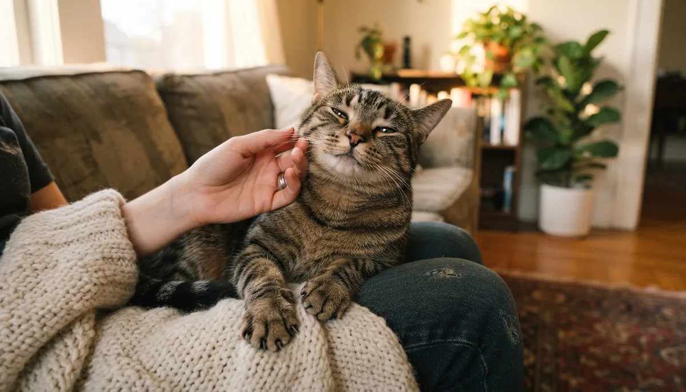

Why Do Cats Purr? The Science Behind the Rumble (It's Not Just Happiness)

A purring cat curled on your lap feels like the universe telling you everything is fine. But here's the twist most cat parents never learn: purring isn't only a happiness sound. Cats purr when they're content, yes — but also when they're hungry, healing, stressed, giving birth, and sometimes even when they're in pain. Drawing on guidance from veterinary sources, the ASPCA and feline behavior researchers, here's what that little engine actually means — and the one situation where a purr should make you pay closer attention.
First: how does purring even work?
For decades scientists genuinely didn't know. The best-supported explanation today: a purr starts in the brain, which sends a rhythmic signal to the muscles of the larynx (voice box). Those muscles twitch 25 to 150 times per second, opening and closing the space between the vocal cords — and the air moving past during both inhale and exhale creates that continuous rumble. That's what makes purring special among cat sounds: meows happen only on the exhale, but a purr runs both directions, which is how cats can keep it going for minutes on end (even while eating).
One more piece of trivia to win a dinner party: as a rule, cats that purr can't roar, and cats that roar can't purr. Your house cat shares its purring hardware with cheetahs and bobcats — lions and tigers got the roar instead.
The 6 real reasons cats purr
1. Contentment — the classic lap purr Normal
This is the purr everyone knows: your cat is relaxed, warm, being petted, and the motor switches on. Kittens start purring at just a few days old while nursing, and mother cats purr back — so for cats, purring is wired to safety and comfort from the very first week of life. A loose body, slow blinks and kneading paws alongside the purr mean exactly what you hope they mean.
Read the body: half-closed eyes, upright relaxed tail and soft posture confirm a happy purr. Our cat body language guide covers the full checklist.
2. The "solicitation purr" — feed me, human Normal (and sneaky)
Researchers at the University of Sussex discovered that cats have a special hungry purr: they embed a high-frequency cry — acoustically similar to a human baby's cry — inside the low rumble. Humans rate this "solicitation purr" as more urgent and harder to ignore, even people who've never owned a cat. If your cat purrs at you loudly at 6 a.m. near the food bowl, you're not imagining the difference: that purr was engineered, by evolution, to work on you.
3. Communication and bonding Normal
Between cats, purring is a peace signal — kittens purr to their mother, and adult cats may purr when greeting a friendly cat or inviting play. With you, a purr during greeting or head-bumping is your cat's way of saying the relationship is good. Interestingly, adult cats rarely purr at each other as much as they purr at humans; many behaviorists believe cats have partly repurposed the purr just for us.
4. Self-soothing — purring under stress Read the context
Here's the counterintuitive one: cats often purr at the vet's office, in the carrier, or in a new home — situations where they're clearly not happy. Behaviorists compare it to a person humming or deep-breathing to stay calm: purring releases soothing signals in the cat's own nervous system. A purring cat with flattened ears, dilated pupils, a tucked body or a twitching tail is coping, not content.
5. Healing — the built-in therapy machine Fascinating science
Purr frequencies fall largely between 25 and 150 Hz — a range that studies on vibration therapy associate with promoting bone density, easing pain and helping tissue repair. This may explain why cats purr while injured or recovering (spending precious energy on it), and why cats as a species are famously good at healing. The science is still evolving, but "purring as self-repair" is taken seriously by researchers — and it's a lovely thought that the same rumble may lower your stress and blood pressure too, as some studies on cat owners suggest.
6. Pain or illness — the purr that's a red flag Vet check
Because purring is self-soothing, a sick or hurting cat may purr more, not less. Cats are masters at hiding pain, and a purr can mask it further. The purr itself isn't the warning sign — the context is: purring while hiding, refusing food, breathing with effort, sitting hunched, or being unusually still all deserve a vet call. A purr should never be used as proof that a cat is fine.
Why doesn't my cat purr?
Some perfectly happy cats rarely purr, or purr so quietly you can only feel it with a hand on their chest. Purring volume and frequency vary hugely between individuals — feral-raised cats often purr less, and some cats simply express contentment through slow blinks, kneading and proximity instead. If your cat has never been much of a purrer, that's just personality. If a cat that always purred suddenly stops (or a quiet cat suddenly purrs constantly), a change like that is worth mentioning to your vet, since shifts in vocal behavior can accompany illness.
Can you make a cat purr?
You can invite one. Most cats purr fastest with slow, gentle strokes around the cheeks, chin and the base of the ears — the spots loaded with scent glands where cats enjoy contact most. A calm voice, a warm lap and letting the cat come to you all help. What doesn't work: chasing, restraining or petting the belly of a cat that hasn't offered it. Purring is a state your cat opts into, which is exactly why it feels like such a compliment.
Frequently asked questions
Do cats purr only when they're happy?
No — that's the biggest purring myth. Cats purr when content, but also when hungry, stressed, injured, giving birth or even dying. Purring is better understood as a self-soothing and communication tool than as a smile. Always read the purr together with the cat's body language and behavior.
Why does my cat purr so loudly?
Purr volume is mostly individual — like how loudly people laugh. Size, anatomy and personality all play a role, and some cats also learn that a louder purr gets attention (or breakfast) faster. A loud purr in a relaxed cat is nothing to worry about.
Is it true purring can heal bones?
The claim comes from research showing purr vibrations (roughly 25–150 Hz) overlap with frequencies used in vibration therapy to support bone density and tissue healing. It's a serious hypothesis with supportive evidence, not settled fact — but it may help explain why injured cats purr and why cats recover from injuries remarkably well.
Why does my cat purr and then bite me?
That's usually petting-induced overstimulation: the cat enjoyed the contact, hit its limit, and warned you with signals you may have missed — a twitching tail, skin rippling, ears rotating back. The purr can continue right up to the nip. Learn the warning signs in our cat body language guide and pause petting at the first tail flick.
Do big cats purr?
Some do. Cheetahs, cougars, bobcats and domestic cats purr; lions, tigers, leopards and jaguars can't truly purr but can roar — a difference in the flexibility of a small bone structure in the throat. No cat species can do both.
By the CanMyPet Editorial Team · Reviewed against guidance from the ASPCA, veterinary behavior sources and published feline research · Published July 2026.